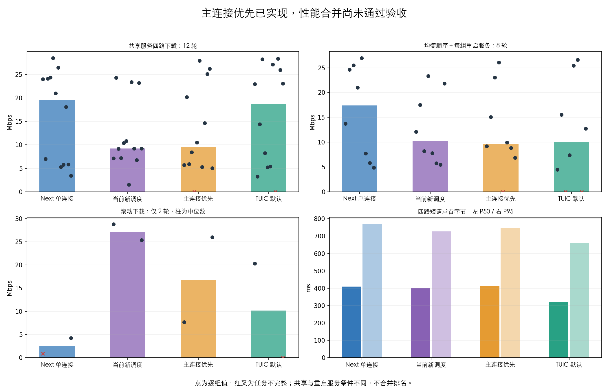

2026-11-22 · Android TFY-AN00 / Android12 · 同 Wi-Fi、香港 VPS · 原型核心实验
主连接优先机制已经实现，但本轮没有证明能同时继承单连接吞吐和原调度的其他优势，因此保持默认关闭。共享服务十二轮四路下载中位数：单连接 19.52、原调度 9.22、主连接优先 9.45、TUIC 18.68 Mbps。发现明显波动后，追加均衡顺序、每组重启两端测试服务的八轮对照；两种条件分别统计。
追加对照四路下载中位数：单连接 17.38 Mbps（32/32 完成）、原调度 10.17（32/32）、主连接优先 9.59（28/32）、TUIC 10.05（24/32）。90 秒组预算耗尽的失败保留在统计中，不挑选快轮。
所有冷批主连接优先分配均为 [4,0]，确认没有强制拆成两条连接。两轮滚动下载均为 [11,1]，仅有试探分配；本轮没有观察到经容量证明后的正式分流。共享服务首字节冷启动 P50/P95 为 710/1677 ms，单连接为 1083/2308 ms，但该改善不足以抵消吞吐和完成率问题。滚动下载仅两轮，不据此宣布稳定胜出。
正反顺序轮次差异明显，本地回环未观察到同量级的软件损耗。公网慢轮的根因仍未确定，不能直接归因于调度开销，也不能把偶发高吞吐视为优化成立。

已通过 race 与 vet。手机 VPN 已恢复，临时服务与私有测试配置已清理；生产入口保持运行。未替换正式 App 或默认策略。压缩包包含原始失败、追加对照和源码快照。control-first-attempt.log 是首次控制脚本在测量前因临时服务已自动回收而退出的记录，修正后重新完成全部八轮，不算协议失败样本。
新增显式可选 QUICLanes=2, AdaptiveLanes=true, PrimaryPreferred=true。首批业务优先复用主连接，Warm 只准备主连接，不因并发数量增加就强制分到两个通道。已有业务不迁移、不重放，不拆分一条 TCP 流。本轮未修改 BBR、加密或 FCN/1 线格式，也未发布正式 App。
当新请求到来时，只有主连接至少两条既有活跃流且观察到持续读取，才后台准备备用连接。负载观察窗口至少 2 秒、至少 32 KiB 实际读取，避免完全排除较慢的主连接；备用握手成功并不算容量证明。备用容量要求两个至少 0.5 秒、各至少 256 KiB 的正向读样本，证据 15 秒过期。备用速率至少高出主连接近期估计 25%，RTT 不明显更差，才允许有限的新业务分流。
探索期最多一个未结束试探流、每 5 秒最多四次新试探；已收到 64 KiB 后停止该窗口内进一步试探。该字节门限只限制后续分配，不能截断已开始的大流。已有备用业务仍继续完成。新分流的活跃流门限约束不能理解为任意时刻的字节份额上限。备用空闲 15 秒回收，过期回调有代际与序号保护。默认配置仍关闭此策略。
四个主组：Next 单连接、上一轮新调度、主连接优先、TUIC 默认。三种 Next 共用 19458，TUIC 为实际 CatNode/Xray TUIC v5、19451，BBR、FastOpen=false、ReduceRtt=false。证书验证开启，入口固定 IP 隔离 DNS。每阶段开始验证当前物理默认网络为 Wi-Fi，正式性能记录关闭详细追踪。
共享服务初测四路下载每任务 4 MiB、四任务共享一个协议客户端，每组预算 90 秒。先六轮，任何组不完整，或任一模式极差比超过 2.5 / CV 超过 .45，则所有主组一起反向追加六轮，最多十二轮，不按新策略是否获胜决定补测。固定时长回显先三轮，如出现不完整、极差比大于 3 / CV 大于 .60，全组再反向追加两轮。触发原因保留在 repeat-decisions.json；失败组零有效吞吐用于触发，不把分母截断后的巨大极差比当作物理结论。
循环和反向初测出现顺序/时段依赖迹象，因此另外做独立控制对照：两套 Williams 均衡序列，每个模式八个新客户端组。各模式在每个位置出现相同次数，前后继配对均衡；每组重启两种临时传输服务、等待五秒后采样其中一个实现，避免残留连接和旧运行时干扰。该控制组改变了服务器初始条件，不能代表持续负载中的共享服务，不能与初测直接合并。受控计划和逐组时间线全部保留。
滚动下载：四个工作槽持续执行十二个 4 MiB 任务，共享一个客户端，每组预算 150 秒，两个轮次；用于观察首批结束后是否实际试探/分流。混合负载：两条 16 MiB 下载与十二条前台请求共享客户端，两轮；另含 TUIC 双连接作资源对照。回显固定十秒，握手准备另计。短请求每组冷启动/连续各 24、四路 24、预热 3。32 MiB 每组三轮，100 MiB 仅各一轮，不计算稳定性保证。
MiB=1,048,576 字节。有效吞吐仅计完整且内容校验正确的任务字节，除以整组时间；未完成任务的部分字节不算完成数据。表中同时给各组中位数和总完成字节/总耗时，失败不隐藏。首字节 P50/P95 为成功样本 nearest-rank，失败另列。本轮独立节点、单 Wi-Fi，没有蜂窝、锁屏能耗或识别概率验收。
| 实现 | 组数 | 完整任务/总数 | 有效吞吐中位 Mbps | 总已完成字节/总耗时 Mbps | 逐组 Mbps (完成/总数) |
|---|---|---|---|---|---|
| Next 单连接 | 8 | 32/32 | 17.38 | 10.73 | 13.73 (4/4), 24.64 (4/4), 25.47 (4/4), 21.02 (4/4), 26.92 (4/4), 7.74 (4/4), 5.79 (4/4), 4.85 (4/4) |
| Next 当前新调度 | 8 | 32/32 | 10.17 | 9.58 | 12.12 (4/4), 17.52 (4/4), 8.22 (4/4), 23.33 (4/4), 7.77 (4/4), 5.76 (4/4), 5.47 (4/4), 21.81 (4/4) |
| Next 主连接优先 | 8 | 28/32 | 9.59 | 5.45 | 9.22 (4/4), 15.05 (4/4), 23.08 (4/4), 26.1 (4/4), 0 (0/4), 9.95 (4/4), 8.87 (4/4), 6.89 (4/4) |
| TUIC 默认 | 8 | 24/32 | 10.05 | 3.13 | 4.5 (4/4), 15.55 (4/4), 0 (0/4), 7.38 (4/4), 25.42 (4/4), 26.62 (4/4), 0 (0/4), 12.72 (4/4) |
| 实现 | 组数 | 完整任务/总数 | 有效吞吐中位 Mbps | 总已完成字节/总耗时 Mbps | 逐组 Mbps (完成/总数) |
|---|---|---|---|---|---|
| Next 单连接 | 12 | 48/48 | 19.52 | 9.45 | 23.98 (4/4), 7.03 (4/4), 24.09 (4/4), 24.35 (4/4), 28.46 (4/4), 20.97 (4/4), 26.46 (4/4), 5.28 (4/4), 5.77 (4/4), 18.08 (4/4), 5.86 (4/4), 3.41 (4/4) |
| Next 当前新调度 | 12 | 48/48 | 9.22 | 6.96 | 7.11 (4/4), 24.3 (4/4), 9.16 (4/4), 7.17 (4/4), 10.4 (4/4), 10.84 (4/4), 1.52 (4/4), 23.4 (4/4), 9.21 (4/4), 6.79 (4/4), 23.21 (4/4), 9.24 (4/4) |
| Next 主连接优先 | 12 | 44/48 | 9.45 | 5.95 | 5.72 (4/4), 20.19 (4/4), 5.92 (4/4), 8.41 (4/4), 0 (0/4), 10.49 (4/4), 27.92 (4/4), 5.28 (4/4), 14.66 (4/4), 25.12 (4/4), 26.21 (4/4), 5.03 (4/4) |
| TUIC 默认 | 12 | 44/48 | 18.68 | 6.19 | 22.96 (4/4), 3.26 (4/4), 14.41 (4/4), 28.27 (4/4), 8.24 (4/4), 5.2 (4/4), 5.42 (4/4), 27.11 (4/4), 0 (0/4), 28.34 (4/4), 25.95 (4/4), 23.05 (4/4) |
| 实现 | 组数 | 完整任务/总数 | 有效吞吐中位 Mbps | 总已完成字节/总耗时 Mbps | 逐组 Mbps (完成/总数) |
|---|---|---|---|---|---|
| Next 单连接 | 2 | 16/24 | 2.57 | 2.19 | 0.89 (4/12), 4.24 (12/12) |
| Next 当前新调度 | 2 | 24/24 | 27.1 | 26.99 | 28.83 (12/12), 25.38 (12/12) |
| Next 主连接优先 | 2 | 24/24 | 16.82 | 11.84 | 7.67 (12/12), 25.98 (12/12) |
| TUIC 默认 | 2 | 12/24 | 10.15 | 2.37 | 20.3 (12/12), 0 (0/12) |
| 实现 | 阶段 | 成功/总数 | 首字节 P50 ms | 首字节 P95 ms |
|---|---|---|---|---|
| Next 单连接 | cold | 24/24 | 1083.42 | 2307.72 |
| Next 单连接 | warm | 24/24 | 484.62 | 981.77 |
| Next 单连接 | batch | 24/24 | 409.04 | 769.82 |
| Next 当前新调度 | cold | 24/24 | 952.15 | 1917.55 |
| Next 当前新调度 | warm | 24/24 | 411.86 | 787.38 |
| Next 当前新调度 | batch | 24/24 | 401.67 | 726.84 |
| Next 主连接优先 | cold | 24/24 | 710.25 | 1677.26 |
| Next 主连接优先 | warm | 24/24 | 409.68 | 934.97 |
| Next 主连接优先 | batch | 24/24 | 412.81 | 748.58 |
| TUIC 默认 | cold | 24/24 | 911.01 | 1823.95 |
| TUIC 默认 | warm | 24/24 | 392.88 | 589.25 |
| TUIC 默认 | batch | 24/24 | 320.36 | 662.42 |
| 实现 | 有后台时成功/样本 | 前台总样本 | P50 ms | P95 ms | 后台完整/总数 |
|---|---|---|---|---|---|
| Next 单连接 | 24/24 | 24 | 471.97 | 812.92 | 4/4 |
| Next 当前新调度 | 24/24 | 24 | 373.89 | 522.44 | 4/4 |
| Next 主连接优先 | 24/24 | 24 | 449.48 | 719.55 | 4/4 |
| TUIC 默认 | 24/24 | 24 | 407.46 | 917.47 | 2/4 |
| TUIC 双连接 | 24/24 | 24 | 460.6 | 846.41 | 4/4 |
| 实现 | 并发 | 有效组/总数 | 中位 Mbps | 逐组 Mbps |
|---|---|---|---|---|
| Next 单连接 | 1 | 5/5 | 5.23 | 12.62, 5.39, 3.01, 5.23, 5.19 |
| Next 单连接 | 4 | 5/5 | 2.67 | 1.8, 2.83, 2.67, 1.56, 7.96 |
| Next 当前新调度 | 1 | 5/5 | 10.29 | 13.29, 10.29, 12.62, 2.53, 3.76 |
| Next 当前新调度 | 4 | 5/5 | 5.91 | 5.91, 7.98, 3.13, 6.55, 3.54 |
| Next 主连接优先 | 1 | 5/5 | 2.69 | 2.69, 2.24, 12.83, 1.56, 10.14 |
| Next 主连接优先 | 4 | 5/5 | 7.9 | 7.9, 1.89, 8.96, 3.76, 8.23 |
| TUIC 默认 | 1 | 5/5 | 7.98 | 7.98, 12.7, 4.38, 11.17, 5.67 |
| TUIC 默认 | 4 | 5/5 | 9.02 | 9.02, 11.14, 3.2, 9.07, 3.59 |
| 实现 | MiB | 轮次 | 完整 | 耗时秒 | 收到 MiB | 错误 |
|---|---|---|---|---|---|---|
| Next 单连接 | 100 | 1 | True | 91.656 | 100.0 | |
| Next 主连接优先 | 100 | 1 | True | 44.397 | 100.0 | |
| TUIC 默认 | 100 | 1 | True | 79.084 | 100.0 | |
| Next 单连接 | 32 | 1 | True | 43.815 | 32.0 | |
| Next 当前新调度 | 32 | 1 | True | 25.203 | 32.0 | |
| Next 主连接优先 | 32 | 1 | True | 50.379 | 32.0 | |
| TUIC 默认 | 32 | 1 | True | 28.186 | 32.0 | |
| Next 当前新调度 | 32 | 2 | False | 90.001 | 14.77 | deadline exceeded |
| Next 主连接优先 | 32 | 2 | False | 90.0 | 9.95 | deadline exceeded |
| TUIC 默认 | 32 | 2 | True | 11.022 | 32.0 | |
| Next 单连接 | 32 | 2 | True | 11.516 | 32.0 | |
| Next 主连接优先 | 32 | 3 | True | 9.443 | 32.0 | |
| TUIC 默认 | 32 | 3 | True | 10.235 | 32.0 | |
| Next 单连接 | 32 | 3 | True | 69.099 | 32.0 | |
| Next 当前新调度 | 32 | 3 | True | 9.896 | 32.0 |
分配计数为 TCP Dial 决策，不是字节比例。冷批次的 [4,0] 表明没有强制分到备用通道；完成率和速度仍须独立验收。试探次数不等于已经证明分流有收益，proven_spill 为零时不能宣称晋升路径已获公网性能证明。
| 测试 | 实现 | 轮次 | 主/备分配 | 试探 | 有证据新分流 |
|---|---|---|---|---|---|
| final-echo-3 | Next 主连接优先 | 1 | [1, 0] | 0 | 0 |
| final-echo-3 | Next 单连接 | 1 | [1, 0] | 0 | 0 |
| final-echo-3 | Next 当前新调度 | 1 | [1, 0] | 0 | 0 |
| final-echo-3 | Next 单连接 | 2 | [1, 0] | 0 | 0 |
| final-echo-3 | Next 当前新调度 | 2 | [1, 0] | 0 | 0 |
| final-echo-3 | Next 主连接优先 | 2 | [1, 0] | 0 | 0 |
| final-echo-3 | Next 单连接 | 3 | [1, 0] | 0 | 0 |
| final-echo-3 | Next 当前新调度 | 3 | [1, 0] | 0 | 0 |
| final-echo-3 | Next 主连接优先 | 3 | [1, 0] | 0 | 0 |
| final-echo-3 | Next 主连接优先 | 1 | [4, 0] | 0 | 0 |
| final-echo-3 | Next 单连接 | 1 | [4, 0] | 0 | 0 |
| final-echo-3 | Next 当前新调度 | 1 | [2, 2] | 0 | 0 |
| final-echo-3 | Next 单连接 | 2 | [4, 0] | 0 | 0 |
| final-echo-3 | Next 当前新调度 | 2 | [2, 2] | 0 | 0 |
| final-echo-3 | Next 主连接优先 | 2 | [4, 0] | 0 | 0 |
| final-echo-3 | Next 单连接 | 3 | [4, 0] | 0 | 0 |
| final-echo-3 | Next 当前新调度 | 3 | [4, 0] | 0 | 0 |
| final-echo-3 | Next 主连接优先 | 3 | [4, 0] | 0 | 0 |
| final-echo-repeat-2 | Next 当前新调度 | 1 | [1, 0] | 0 | 0 |
| final-echo-repeat-2 | Next 单连接 | 1 | [1, 0] | 0 | 0 |
| final-echo-repeat-2 | Next 主连接优先 | 1 | [1, 0] | 0 | 0 |
| final-echo-repeat-2 | Next 单连接 | 2 | [1, 0] | 0 | 0 |
| final-echo-repeat-2 | Next 主连接优先 | 2 | [1, 0] | 0 | 0 |
| final-echo-repeat-2 | Next 当前新调度 | 2 | [1, 0] | 0 | 0 |
| final-echo-repeat-2 | Next 当前新调度 | 1 | [2, 2] | 0 | 0 |
| final-echo-repeat-2 | Next 单连接 | 1 | [4, 0] | 0 | 0 |
| final-echo-repeat-2 | Next 主连接优先 | 1 | [4, 0] | 0 | 0 |
| final-echo-repeat-2 | Next 单连接 | 2 | [4, 0] | 0 | 0 |
| final-echo-repeat-2 | Next 主连接优先 | 2 | [4, 0] | 0 | 0 |
| final-echo-repeat-2 | Next 当前新调度 | 2 | [2, 2] | 0 | 0 |
| final-mixed | Next 单连接 | 1 | [14, 0] | 0 | 0 |
| final-mixed | Next 当前新调度 | 1 | [8, 6] | 0 | 0 |
| final-mixed | Next 主连接优先 | 1 | [10, 4] | 4 | 0 |
| final-mixed | Next 当前新调度 | 2 | [13, 1] | 0 | 0 |
| final-mixed | Next 主连接优先 | 2 | [10, 4] | 4 | 0 |
| final-mixed | Next 单连接 | 2 | [14, 0] | 0 | 0 |
| final-parallel-6 | Next 单连接 | 1 | [4, 0] | 0 | 0 |
| final-parallel-6 | Next 当前新调度 | 1 | [2, 2] | 0 | 0 |
| final-parallel-6 | Next 主连接优先 | 1 | [4, 0] | 0 | 0 |
| final-parallel-6 | Next 当前新调度 | 2 | [2, 2] | 0 | 0 |
| final-parallel-6 | Next 主连接优先 | 2 | [4, 0] | 0 | 0 |
| final-parallel-6 | Next 单连接 | 2 | [4, 0] | 0 | 0 |
| final-parallel-6 | Next 主连接优先 | 3 | [4, 0] | 0 | 0 |
| final-parallel-6 | Next 单连接 | 3 | [4, 0] | 0 | 0 |
| final-parallel-6 | Next 当前新调度 | 3 | [2, 2] | 0 | 0 |
| final-parallel-6 | Next 单连接 | 4 | [4, 0] | 0 | 0 |
| final-parallel-6 | Next 当前新调度 | 4 | [2, 2] | 0 | 0 |
| final-parallel-6 | Next 主连接优先 | 4 | [4, 0] | 0 | 0 |
| final-parallel-6 | Next 单连接 | 5 | [4, 0] | 0 | 0 |
| final-parallel-6 | Next 当前新调度 | 5 | [2, 2] | 0 | 0 |
| final-parallel-6 | Next 主连接优先 | 5 | [4, 0] | 0 | 0 |
| final-parallel-6 | Next 当前新调度 | 6 | [2, 2] | 0 | 0 |
| final-parallel-6 | Next 主连接优先 | 6 | [4, 0] | 0 | 0 |
| final-parallel-6 | Next 单连接 | 6 | [4, 0] | 0 | 0 |
| final-parallel-repeat-6 | Next 主连接优先 | 1 | [4, 0] | 0 | 0 |
| final-parallel-repeat-6 | Next 当前新调度 | 1 | [2, 2] | 0 | 0 |
| final-parallel-repeat-6 | Next 单连接 | 1 | [4, 0] | 0 | 0 |
| final-parallel-repeat-6 | Next 主连接优先 | 2 | [4, 0] | 0 | 0 |
| final-parallel-repeat-6 | Next 当前新调度 | 2 | [2, 2] | 0 | 0 |
| final-parallel-repeat-6 | Next 单连接 | 2 | [4, 0] | 0 | 0 |
| final-parallel-repeat-6 | Next 当前新调度 | 3 | [2, 2] | 0 | 0 |
| final-parallel-repeat-6 | Next 单连接 | 3 | [4, 0] | 0 | 0 |
| final-parallel-repeat-6 | Next 主连接优先 | 3 | [4, 0] | 0 | 0 |
| final-parallel-repeat-6 | Next 单连接 | 4 | [4, 0] | 0 | 0 |
| final-parallel-repeat-6 | Next 主连接优先 | 4 | [4, 0] | 0 | 0 |
| final-parallel-repeat-6 | Next 当前新调度 | 4 | [2, 2] | 0 | 0 |
| final-parallel-repeat-6 | Next 主连接优先 | 5 | [4, 0] | 0 | 0 |
| final-parallel-repeat-6 | Next 当前新调度 | 5 | [2, 2] | 0 | 0 |
| final-parallel-repeat-6 | Next 单连接 | 5 | [4, 0] | 0 | 0 |
| final-parallel-repeat-6 | Next 主连接优先 | 6 | [4, 0] | 0 | 0 |
| final-parallel-repeat-6 | Next 当前新调度 | 6 | [2, 2] | 0 | 0 |
| final-parallel-repeat-6 | Next 单连接 | 6 | [4, 0] | 0 | 0 |
| final-rolling | Next 单连接 | 1 | [12, 0] | 0 | 0 |
| final-rolling | Next 当前新调度 | 1 | [5, 7] | 0 | 0 |
| final-rolling | Next 主连接优先 | 1 | [11, 1] | 1 | 0 |
| final-rolling | Next 当前新调度 | 2 | [2, 10] | 0 | 0 |
| final-rolling | Next 主连接优先 | 2 | [11, 1] | 1 | 0 |
| final-rolling | Next 单连接 | 2 | [12, 0] | 0 | 0 |
| controlled-c1-b1-p1-next-base | Next 单连接 | 1 | [4, 0] | 0 | 0 |
| controlled-c1-b1-p2-next-opt | Next 当前新调度 | 1 | [2, 2] | 0 | 0 |
| controlled-c1-b1-p4-next-primary | Next 主连接优先 | 1 | [4, 0] | 0 | 0 |
| controlled-c1-b2-p1-next-opt | Next 当前新调度 | 1 | [4, 0] | 0 | 0 |
| controlled-c1-b2-p2-next-primary | Next 主连接优先 | 1 | [4, 0] | 0 | 0 |
| controlled-c1-b2-p3-next-base | Next 单连接 | 1 | [4, 0] | 0 | 0 |
| controlled-c1-b3-p1-next-primary | Next 主连接优先 | 1 | [4, 0] | 0 | 0 |
| controlled-c1-b3-p3-next-opt | Next 当前新调度 | 1 | [2, 2] | 0 | 0 |
| controlled-c1-b3-p4-next-base | Next 单连接 | 1 | [4, 0] | 0 | 0 |
| controlled-c1-b4-p2-next-base | Next 单连接 | 1 | [4, 0] | 0 | 0 |
| controlled-c1-b4-p3-next-primary | Next 主连接优先 | 1 | [4, 0] | 0 | 0 |
| controlled-c1-b4-p4-next-opt | Next 当前新调度 | 1 | [2, 2] | 0 | 0 |
| controlled-c2-b1-p1-next-base | Next 单连接 | 1 | [4, 0] | 0 | 0 |
| controlled-c2-b1-p2-next-opt | Next 当前新调度 | 1 | [2, 2] | 0 | 0 |
| controlled-c2-b1-p4-next-primary | Next 主连接优先 | 1 | [4, 0] | 0 | 0 |
| controlled-c2-b2-p1-next-opt | Next 当前新调度 | 1 | [2, 2] | 0 | 0 |
| controlled-c2-b2-p2-next-primary | Next 主连接优先 | 1 | [4, 0] | 0 | 0 |
| controlled-c2-b2-p3-next-base | Next 单连接 | 1 | [4, 0] | 0 | 0 |
| controlled-c2-b3-p1-next-primary | Next 主连接优先 | 1 | [4, 0] | 0 | 0 |
| controlled-c2-b3-p3-next-opt | Next 当前新调度 | 1 | [2, 2] | 0 | 0 |
| controlled-c2-b3-p4-next-base | Next 单连接 | 1 | [4, 0] | 0 | 0 |
| controlled-c2-b4-p2-next-base | Next 单连接 | 1 | [4, 0] | 0 | 0 |
| controlled-c2-b4-p3-next-primary | Next 主连接优先 | 1 | [4, 0] | 0 | 0 |
| controlled-c2-b4-p4-next-opt | Next 当前新调度 | 1 | [4, 0] | 0 | 0 |
独立本地四路回环使用同一代码和本地测试证书，不连接公网节点。Mac 单连接中位约 778 Mbps、主连接优先约 790 Mbps；Android 单连接约 234 Mbps、主连接优先约 235 Mbps，均只有三轮。该诊断未观察到与公网差异同量级的软件开销，不能据此排除所有设备、拥塞恢复或路径交互。Android 诊断在一个完整公网阶段结束后执行，期间主调度器等待，诊断结束后恢复后续阶段，未与公网传输抢同一设备资源。
原始回环输出在 local-profile.txt / android-local-profile.txt。出现组预算耗尽时，父上下文会关闭连接，所以流错误原文可能是 Application error 0x0 (local)，而不是字符串 deadline exceeded；应结合整组总耗时和预算判断，不将此误报为认证错误。
本地 race/vet 通过，覆盖冷批单连接、资格证据、试探门限、过期证据、活跃比例门限、空闲回调代际与低速持续读样本。原始 JSONL、CSV、服务时间线、重复决策、编译哈希、功能源码均保留。构建仍需 FastCatAPP 的 core 工作区及其本地依赖；压缩包不是独立完整仓库。不含部署凭证。